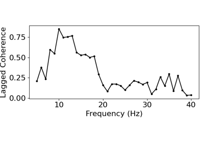

neurodsp.plts.plot_lagged_coherence¶
- neurodsp.plts.plot_lagged_coherence(freqs, lcs, ax=None, **kwargs)[source]¶
Plot lagged coherence values across frequencies.
- Parameters:
- freqs1d array
Vector of frequencies at which lagged coherence was computed.
- lcs1d array
Lagged coherence values across the computed frequencies.
- axmatplotlib.Axes, optional
Figure axes upon which to plot.
- **kwargs
Keyword arguments for customizing the plot.
Examples
Plot lagged coherence:
>>> from neurodsp.sim import sim_combined >>> from neurodsp.rhythm import compute_lagged_coherence >>> sim_components = {'sim_synaptic_current': {}, ... 'sim_bursty_oscillation': {'freq': 20, ... 'burst_params': {'enter_burst' : 0.50, ... 'leave_burst' : 0.25}}} >>> sig = sim_combined(n_seconds=10, fs=500, components=sim_components) >>> lag_cohs, freqs = compute_lagged_coherence(sig, fs=500, freqs=(5, 35), ... return_spectrum=True) >>> plot_lagged_coherence(freqs, lag_cohs)
Examples using neurodsp.plts.plot_lagged_coherence¶


Lagged Coherence